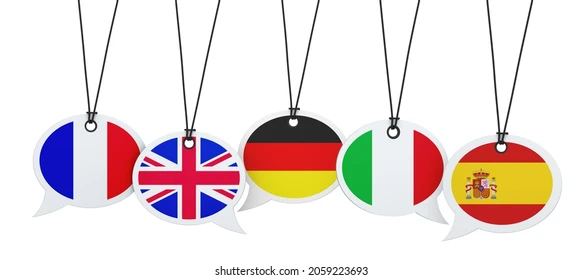

Atención al Cliente
Nuestro equipo de profesionales está capacitado para manejar todas las consultas y problemas de sus clientes de manera rápida y eficiente, asegurando su completa satisfacción en cada interacción.

Soporte Técnico
Proporcionamos soporte técnico especializado para resolver cualquier problema técnico que sus clientes puedan enfrentar, desde problemas de software hasta configuración de dispositivos.
Gestión de Pedidos
Nos encargamos de la recepción, procesamiento y seguimiento de pedidos, asegurando que cada transacción se maneje con precisión y puntualidad.
.jpg)
Encuestas y Retroalimentación
Realizamos encuestas de satisfacción y recopilamos retroalimentación valiosa de sus clientes para ayudarle a mejorar sus productos y servicios.
Telemarketing
Ofrecemos servicios de telemarketing para ayudarle a promover sus productos y servicios, aumentando sus ventas y mejorando su alcance de mercado.
.jpg)
Servicio Multilingüe
Contamos con agentes que hablan varios idiomas, garantizando una comunicación efectiva con sus clientes de diferentes partes del mundo.
.jpg)
Gestión de Citas
Organizamos y gestionamos las citas para sus clientes, asegurando que cada interacción se programe y confirme correctamente.
Recuperación de Clientes
Trabajamos en la recuperación de clientes inactivos, ayudándole a mantener una base de clientes activa y comprometida.
Centro de Contacto Omnicanal
Manejamos comunicaciones a través de múltiples canales, incluyendo teléfono, correo electrónico, chat en vivo y redes sociales, para brindar una atención completa y coherente.
Formación y Capacitación
Ofrecemos programas de formación y capacitación para su personal, asegurando que estén equipados con las habilidades necesarias para proporcionar un excelente servicio al cliente.